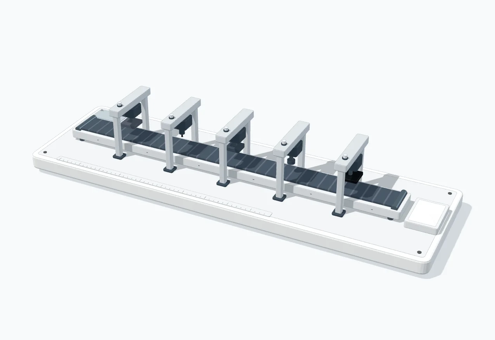
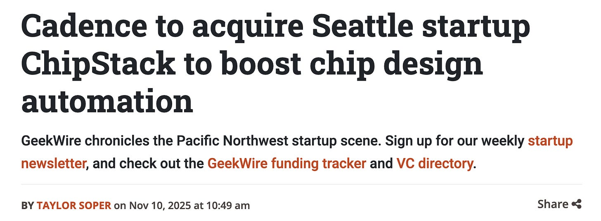
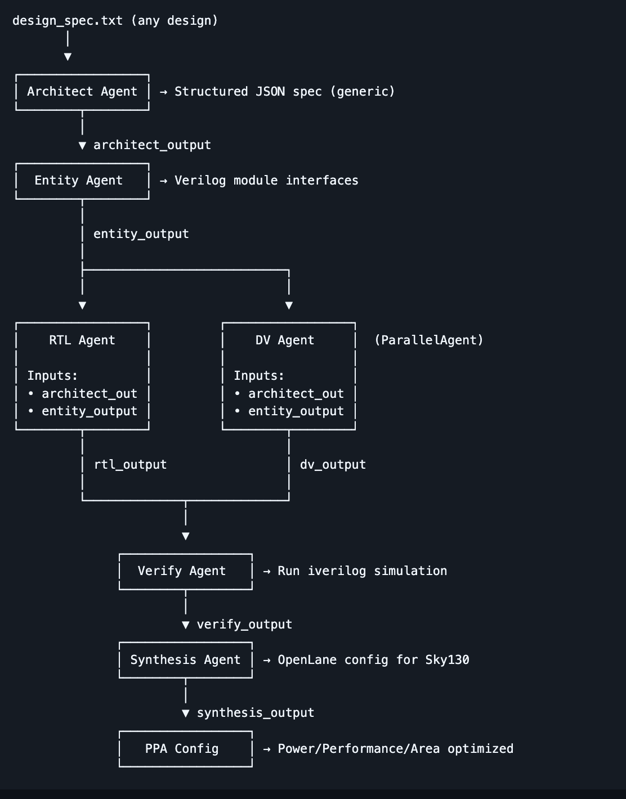
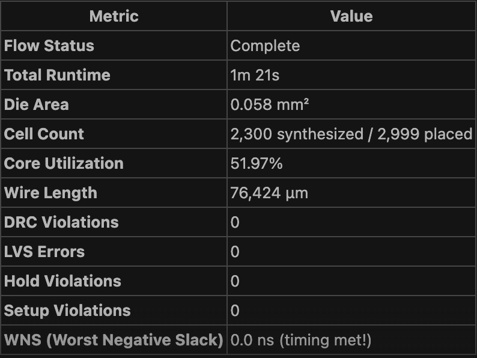
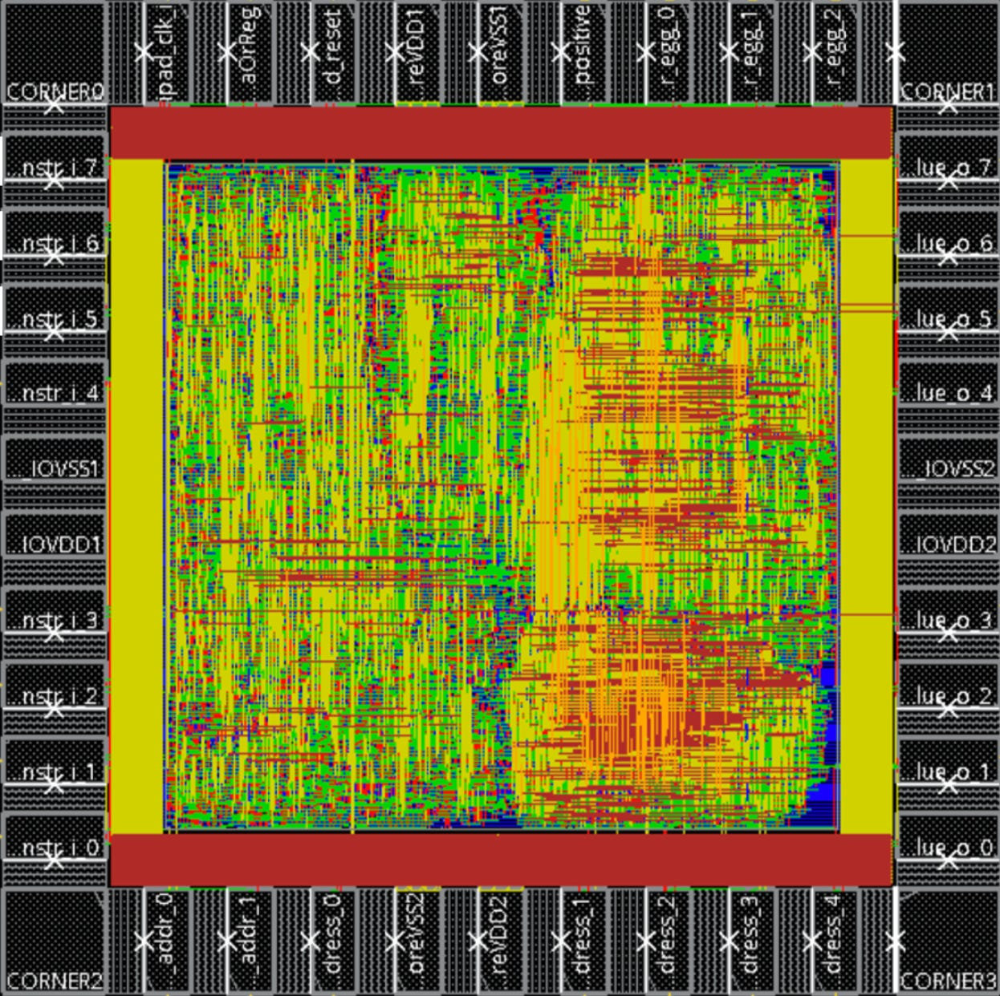
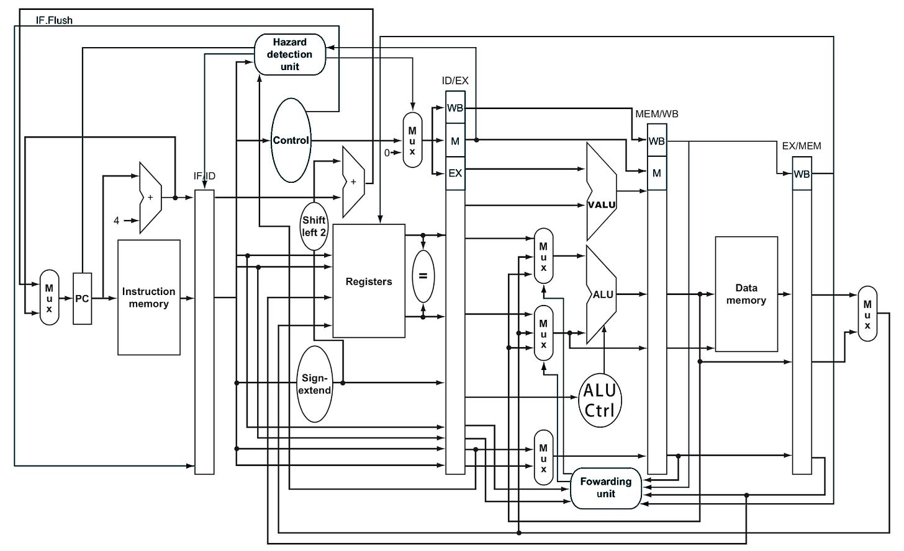
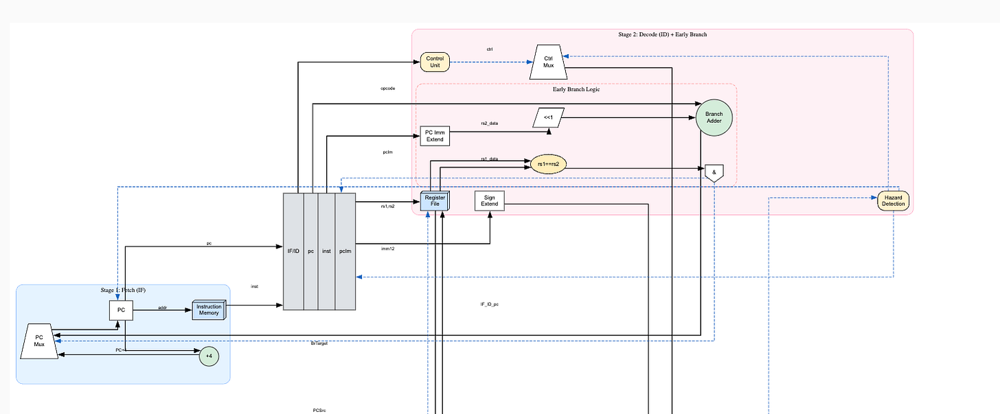

Vision
On Disrupting the Semiconductor Industry with AI Agents

Accelerating chip design of CPUs, GPUs and TPUs using an ecosystem of AI agents
The $700 billion dollar chip design industry forms the life blood of modern AI compute by enabling the design and manufacture of massive silicon chips like GPUs, TPUs and CPUs.
The industry is dominated by players like Nvidia, AMD, Qualcomm, Intel and Texas Instruments who have huge teams of hardware architects, designers, and verification engineers to build plan and build out large Intellectual Property (IPs) and System on Chips (SoC) over months of effort with the help of Electronic Design Automation (EDA) tools. Once the chip (i.e netlist) is designed as passed to the fabrication facility, the scope for error is very minimal as thousands of chips will be manufactured from the netlist and a bug could result in millions in losses. Due to developments in AI and electric vehicles the chips that will be designed by these organisations are getting increasingly complex in terms of performance, area and power with timelines to deliver them only getting tighter.
The resulting workload has become extremely high for human engineers, making AI assistance inevitable. Coding agents like Claude code or cursor accelerate the lines of code written (LOC) in these organizations, but there is still a huge gap in terms of being able to interact fluently with the tools provided by EDA vendors.
Traditional EDA vendors are struggling to keep up with the pace of AI and are instead preferring to buy or invest in startups that and iterate and ship fast instead. This opens up a huge opportunity to build agentic systems that integrate into EDA tools to capture additional speed and efficiency for hardware engineers.

We are already seeing trends in this direction, and it's only bound to accelerate.
How does traditional chip design work?
The Architect
An architect will first draft the specification document based on the customer's requirements, as well as the IPs and SoCs they might already have access to from previous projects. This allows them to reuse existing IPs as it is or with minimal changes.
For example say you need a chip to function at 200 MHz, but your organisation only has a 400 MHz clock. As an architect you can suggest to use a clock divider and generate a 200 MHz clock from a 400 MHz clock.
Behaviour modeling in Verilog
Once the spec is developed by the architect, A team of Register Transfer Language (RTL) coders write the verilog behaviour level description of how the chip should implement the spec.
Design Verification
Once the RTL is written a team verification experts will verify if the chip is functionally correct as per the specification written by the architect. This is the stage at which any bugs at the RTL level get caught.
Synthesis and Timing
If the design is functionally correct a team of Physical Design (PD) experts will synthesise the HDL code into logic gates and make sure they fit efficiently onto a die in a way that is area and performance optimized. This is followed by insertion of special logic (scan chains) into the netlist to detect any design flaws during fabrication.
Once the timing and area optimized netlist is available, it is shared with the fabrication facility and etched it into a silicon wafer.
The Problem: Chip Design software (EDA) is the bottleneck
The rise of AI is a double-edged sword for the semiconductor industry. While the demand for more powerful AI chips skyrockets, the complexity of designing them is growing even faster. It's increasingly evident that AI has pushed chip design past Moore's Law.
Analysts note that this growth cannot come just from smaller transistors; instead, core counts and system-level integration are rising faster than raw feature-size scaling, so die and package complexity explode as AI model sizes grow.
As a result of this the software toolkit to design chips, known as Electronic Design Automation (EDA) has become a serious bottleneck in the complexity of chips that can be designed. The current process is agonizingly slow, with large number of context changes between multiple tools which that is prone to human error making it fundamentally unsuited for the AI era.
EDA and design-tool vendors themselves describe a widening "design productivity gap": circuit capacity afforded by Moore's Law (more transistors per chip) is growing faster than what existing implementation and verification flows can handle efficiently. Even after major re-architecting of tools for multi-threading and distributed computation, leading EDA providers highlight that designers still struggle to close timing, power, and noise on ever larger blocks (tens of millions of instances per block) and that physical design flows in particular require more research to keep pace with silicon scale.
The solution: ChipOS
The vision of ChipOS is simple: AI Agents to automate the Spec-to-GDSII development flow by adding intelligence to EDA.
Chip design will only get more complex. We need to ensure that our developers and our tools are equally powered by AI to keep up with the exponential growth of the industry.
We are building the next generation of development tools for semiconductor engineers moving from simple automation scripts to truly intelligent AI Agents.
We will enable this using the following key automations:
- Spec-to-Diagram/Diagram-to-RTL: Converting high-level specifications directly into logic diagrams and then into synthesis-ready RTL (Register-Transfer Level) code.
- The Physical Design (PD) Agent: PD is the backbone of generating the transistor data needed from the programmatic description of chip (verilog). It involves multiple steps that take the chip through partitioning to signoff and ensures the design is optimized in terms of power, performance and area. (PPA)
- SoC & Wrapper Generation: Automatically generating the glue logic and wrappers needed to seamlessly connect disparate sub-chips and protocol bridges.
- Waveform Analysis & Debugging: Agents analyze complex waveform data, proactively identify root causes of bugs, and suggest fixes in real-time within the BrowserOS environment.
- Hardcore Optimization (PPA & CDC): Using Reinforcement Learning (RL) to automatically resolve critical issues like Power, Performance, and Area (PPA) trade-offs and elusive CDC problems.
By automating these time-consuming portions of the EDA flow, we can save large companies millions in engineering time easily thousands of dollars per engineer per year. Our tools enable faster time-to-market and significantly reduce the risk of costly re-spins.
There has been very little progress in the development of agentic systems and dev-tools that can universally integrate into the tools provided and no one is doing this across all verticals making this a ripe opportunity for disruption.
Progress so far
ChipAgent:
At its core, chipAgent is an environment that has all agents and tools needed to complete building a chip. The agents have a comprehensive understanding how how to use these tools and debug issues.

The current MVP contains:
- Architect agent: It reviews the chip specification given by the user and comes up with an architecture to design it, using a combination of design knowledge and pre existing IPs and SoCs.
- Entity design agent: We need a common entity (simplified outline for the chip) to start the RTL and design verification process. This agent plans out the entity and shares it with the RTL and DV agents.
- RTL design agent: It consumes the entity and architecture and starts writing the verilog RTL code.
- Design verification agent: It consumes the entity and architecture and starts writing the verilog DV testbench code.
- Physical Design agent: Once the design passes the design verification, the synthesis agent generates the netlist from the code using SkyWater SKY130 PDK library and openLANE tools it has access to.

RTLViz:
Any hardware engineer needs a good hardware block diagram to describe the core functionality of a chip using hardware specific components like muxes, logic gates or registers that will provide them a comprehensive understanding of how an IP works.
Low level diagrams (gate level) generated by synthesis tools are hyper detailed and do not give engineers a clear picture of what they're working with at a high level.

Currently no automation exists to provide clear high level hardware block diagrams using hardware components due to a severe lack of training data for chip design diagrams. Most people make do with mermaid diagrams that produce flow charts or spend hours designing a diagram on PowerPoint.

We enable this in two phases:
Phase 1: The Semantic Engine (The Brains)
We use an LLM to read the RTL and answer the "human" questions. It figures out if a block is doing math or handling logic. The biggest win here was our "Golden Rule of Staging." We realised that a component belongs to the pipeline stage where its inputs first become available. This creates a logical flow from left to right that actually makes sense using which the abstract graph can be built by parsing the HDL code.
Phase 2: The Rendering Engine (The Hands)
Once the AI builds the abstract graph, we lock it out. We hand the data over to a deterministic engine. This handles the layout using orthogonal routing and applies strict styling rules. This split ensures that if you run the tool twice, you get the exact same diagram for reproducibility.

Future work
Expand the RTL agent to handle more complex chip design tasks, including but not limited to:
Lint and Clock Domain Crossing (CDC) Error Fixing
Years of experience are required to debug complex issues like Clock Domain Crossing (CDC). Linting rules constantly change, leaving massive legacy codebases in a state of perpetual clean-up. We can develop specialised agents to assist in debugging lint/CDC issues that are integrated with Cadence Jasper CDC.
System on Chip (SoC) Integration Automation
Connecting complex sub-chips is a manual, tedious process. Integrating diverse internal protocols (like AXI, AHB) demands significant engineering time and creates integration headaches. Wrapper agents with context on an organizations protocols will be able to solve this problem.
Debugging & Verification
Analyzing dense waveforms and logs is a grueling task. Design specs often become outdated or are misinterpreted, leading to costly silicon re-spins.
Legacy Tooling
EDA vendors need better tools as well, they are just focused on their core competence, but AI opens so many more possibilities in terms of providing useful tools to hardware engineers including but not limited to detailed block diagram generation, agentic resolution of clock domain crossing (CDC) errors or self correcting RTL generation.
We are moving into a new era in chip design where we will have agents that can interact with tools to perform different tasks and engineers to configure and monitor these agents. ChipsOS will lead this change through chip agents that will use iterative loops to self diagnose issues using agentic memory and logging, leading to chips being shipped in record time to market.
Note:
RTLViz is our MCP (Model Context Protocol) server that enables AI assistants to generate publication-quality
RTL block diagrams from Verilog/SystemVerilog code.
Check out RTLViz here: https://pypi.org/project/rtlviz/
Citations:
- https://www.vktr.com/ai-technology/the-end-of-moores-law-ai-chipmakers-say-its-already-happened/
- https://techcrunch.com/2025/01/07/nvidia-ceo-says-his-ai-chips-are-improving-faster-than-moores-law/
- https://www.allpcb.com/allelectrohub/how-to-achieve-a-trillion-transistor-gpu
- https://github.com/chipsalliance/chisel
- https://chipagents.ai/
Originally published on Substack.